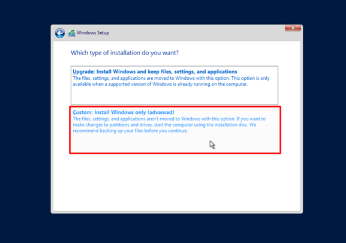
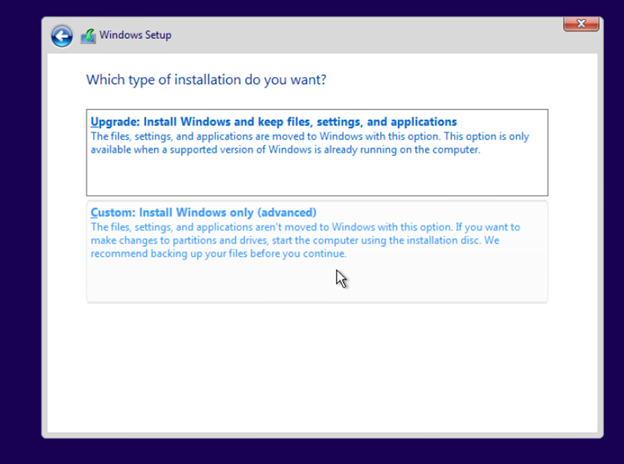

Windows Server Guide
Dette er en guide på hvordan man setter opp Windows Server 2019 med VMware VSphere.
Del 1: Server VM Setup
Trykk New Virtual Machine.
Trykk Next til du kommer til Select a name and folder, fyll det ut og felg Next.
Velg din ønskede compute resource og trykk next.
Velg din ønskede storage og trykk next, du kan hoppe over compatibility fordi den er satt på det anbefalte.
Deretter velg windows, og bytt til Microsoft Windows Server 2016.
Trykk på dropdown-menyen ved New Network og velg browse.
Velg ditt ønskede nettverk.
Åpne dropdown-menyen under New CD/DVD Drive og velg Content Library ISO File
Velg windows_server_2019 og trykk ok.
Deretter huk av på Connect At Power On.
Åpne New Hard Disk, velg dropdown-menyen under Disk Provisioning og velg Thin Provision, uten dette vil ikke VM-en starte ordentlig.
Nå må du velge VM Options
Så under Boot Options velg force EFI/BIOS boot, uten dette vil ikke windows EFI/BIOS filen kunne bli bootet. Deretter trykk next til du er ferdig.
Del 2: Windows Setup
Start VM-en og trykk boksen med forhåndsvisning.
Velg EFI VMware Virtual SATA CDROM Drive og trykk enter raskt igjen, ser du at den laster inn etter dette er du vellykket.
Etter litt lasting vil du komme til denne skjermen, velg ditt ønskede språk, og trykk next.
Deretter velg Install Now.
Med mindre du har en produktnøkkel, velg I don't have a product key.
Deretter velg Windows Server 2019 Datacenter (Desktop Experience) og trykk next.
Nå velg I accept the liscense terms og trykk next.
Velg Custom: Install Windows only, hvis du har filer du må beholde på maskinen, velg det heller Upgrade: Install Windows and keep files, settings, and applications.
Hvis du valgte å installere bare windows, velg din ønskede disk å installere på, så trykk next. Deretter vil windows bli installert og det kan ta litt tid.
Når du er ferdig, lag et passord for Administrator brukeren din, dette skriver du hver gang du logger på maskinen.

Nå vil du komme til en innloggingsskjerm, trykk Send Ctrl + Alt + Delete for å forsette
Nå skriv inn passordet du lagde for Administrator.
Del 3: Begynn konfigurasjon av serveren
Begynn med å sjekke at alt under ROLES AND SERVER GROUPS er grønt, hvis ikke og det er feil under Services må du bare vente litt, muligens gå inn, høyreklikke på de individuelle servicene og trykke Start service. Hvis problemet er i et annet område trenger du å gå inn på ledetekst (command line) og skrive sfc/scannow.
Nå skal du konfigurere noen brukere, så gå inn på Computer Management under Tools.
Gå inn under Local Users and Groups, så gå inn på Users. Deretter høyreklikk inne i Users og trykk New User.
Fyll ut det følgende, trykk Create, så Close.
Deretter høyreklikk på din nye bruker og trykk Properties.
Nå velg Member Of og Add.

Skriv Administrators inn i feltet og trykk Check Names, som autofyller resten av Administrator-rollen. Så trykk Apply og Close. Jeg anbefaler også å endre navnet på Administrator-brukeren din, men dette er ikke nødvendig.
Nå skal vi endre server navnet, gå inn på Local Server også hva enn som står under Computer Name (for meg: WIN-783E6N5LGV2).
Trykk Change, du kan gjerne også legge til en beskrivelse til maskinen din hvis du vil.
Nå navngi maskinen din, så trykk more.
Skriv inn et domenenavn, så trykk OK og restart maskinen din.
Når du er ferdig med restarten, gå inn på Local Server igjen og velg Ethernet.
Dobbelklikk Ethernet.
Trykk Properties.
Velg Internet Protocol version 4 (TCP/IPv4) og trykk på Properties.
Deretter velg Use the following IP adress, fyll ut de markerte feltene og trykk OK. Deretter kryss ut vinduer til neste steg skjer.
Her er en guide på IP adresse (innenfor skole-nettverket for VMware):
- IP Adresse: 10.12.elevpoolnr.unikip
- Subnettmaske: 255.255.255.0
- Gateway: 10.12.elevpoolnr.1
- DNS: 10.10.1.30
Når maskinen spør deg om du vil gjøre den synlig for andre maskiner, svar ja ellers vil ikke klientmaskinen vi skal sette opp senere kunne koble til serveren.
Del 4: DNS og AD DS Installasjon
Trykk på Add roles and features i Dashboard.
Trykk next helt til du kommer til Server Roles.
Huk av på DNS Server og Active Directory Domain Services, og trykk add features når den spør deg om det.
Trykk next til du kommer til Confirm installations selections siden, og trykk Install, jeg anbefaler å bli på siden av installasjonen fordi vi ikke er ferdige her.
Når det er ferdig installert må du velge Promote this server to a domain controller.
Her må du først huke av på Add a new forest, så skrive ditt eget domenenavn, deretter trykk next.
Nå skriv inn et passord for domenekontrolleren din, så trykk next til du kommer til prerequisites check.
Så lenge den nederste teksten i listen er markert grønn under prerequisites check er alt bra, i så fall trykk Install. Når den er ferdig installert bør den be deg restare maskinen, gjør det slik at alt blir ordentlig satt opp.
Del 5: Installer DHCP Server
Trykk på Add roles and features i Dashboard igjen.
Under Server Roles, huk av på DHCP server og trykk Add Features når den ber om det. Deretter trykk next til du kommer til Confirmation.

Trykk Install og bli på siden til det er ferdig installert.
Velg Complete DHCP Configuration når installasjonen er ferdig.
På Authorization, la den stå på Use the following user's credentials, så trykk Commit og Close.
Nå velg DHCP under Tools.
Så åpne serveren din, høyreklikk IPv4 og velg New Scope.
Nå gi et Scope navn, det kan gjerne være Internal Network, men det er opp til deg.
Her bør du sette hva enn IP-en din er, og slutte den med 2 som start IP-adresse og 254 som end IP-adresse. Dette gjør at scopet distribuerer IP-adresser mellom (og inkludert) disse to punktene. Velg length 24, dette bør automatisk endre subnet til 255.255.255.0, som er riktig.
Trykk next til du kommer hit, her velger du hvor lenge du ønsker at enheter som kobles til skal kunne forbli tilkoblet, noen tips står i teksten over konfigurasjonsfeltene.
Velg yes, så fortsett.
Skriv de tre første delene av IP-adressen til serveren, fulgt av tallet 1 i den siste delen av IP-en. Deretter trykk Add og next.
Nå kan du trykke next helt til du er ved slutten, også gjøre ferdig DHCP Server konfigurasjonen.
Del 6: Sette opp klientmaskin for å teste kobling.
Lag en ny VM, gå gjennom alt helt til du kommer til Select a Guest OS, velg Microsoft Windows 10 her
Fortsett å sette ting opp helt til du kommer til ISO, der velger du en_windows_10_multi, så gjør du resten som du gjorde i serveren.
Velg VMware Virtual SATA CDROM Drive på boot, husk å spamme enter rett etter du har valgt det (samme som på server setup).
Velg ditt ønskede tastatur og språk, så fortsett og trykk Install Now.
Velg I don't have a product key, hvis du har en produkt key kan du skrive den inn.
Så velg Windows 10 Pro og aksepter lisensavtalen.
Hvis du ikke har noen filer du trenger på maskinen, velg Custom: Install Windows Only.
Velg din ønskede disk og trykk next, deretter kan du gå gjennom windows setup som vanlig helt til du kommer til det neste steget.
Når du er på Sign in with Microsoft, velg Domain join instead og sett opp en bruker, deretter bør du kunne logge på maskinen, og den bør være koblet på serveren.
Du kan sjekke om den er koblet til ved å se på hvilket nettverk du er koblet til. Hvis du er koblet til ethernet med domenenavnet til serveren er du vellykket. (Dette er DHCP serveren som automatisk kobler enheter på samme nettverk til serveren).

Del 7: Setup av IIS og FTP Server
Igjen, velg Add Roles and Features og trykk next til du er ved server roles.
Huk av på Web Server (IIS) og trykk Add Features, deretter trykk next til du kommer til Role Services.
Nå huk av på FTP Service og FTP Extensibility, så trykk next, install og exit når du er ferdig.
Nå trykk på IIS ved siden, høyreklikk serveren din og trykk Internet Information Services (IIS) Manager.
Dermed åpne serveren din, og høyreklikk på Default Web Site under Sites. Nå trykk på Add FTP Publishing.
Her bør det være en automatisk IP-adresse som du kan velge under Binding seksjonen, velg den, også huk av på No SSL under SSL seksjonen, så trykk next.
På Authentication and Authorization Information må du huke av på basic authentication, velge Specified roles or user groups, skrive Administrators, og huke av på Read og Write. Dette gjør at brukere under rollen Administrators kan få tilgang til FTP serveren.
Nå velg FTP Firewall Support, her skal vi gjøre at FTP Serveren vil ta imot tilkoblinger eksternt.
Legg inn radiusen 60000-60100 og trykk Apply, da vil den be deg endre brannmuren for å akseptere tilkoblinger fra utsiden.
Søk opp firewall på pcen din og gå inn på Windows Defender Firewall with Advanced Security.
Gå til Inbound Rules og velg New Rule.
Huk av på port, så trykk next.
Under Specific local ports, skriv inn 21, 60000-60100, 21 er porten på FTP serveren.
Trykk next helt til du kommer til name der du må navngi reglen. Du kan godt navngi den FTP Inbound Port Rule eller noe lignende.
Nå gå inn på Service under Tools.
Finn Microsoft FTP Service og restart den, da bør FTP serveren fungere riktig.
Del 8: FTP tilkobling gjennom FileZilla
Dette er svært simpelt, bare trykk på ikonet øverst til venstre.
Velg New site og navngi den et passende navn.
Sett opp instillingene som de er vist på bildet [protokoll: FTP, kryptering: bare bruk FTP, innloggingstype: normal] mens du logger inn på en bruker i Administrators gruppen. Da bør du bli logget inn, og filer kan bli sendt mellom serveren og maskinen du er på.
Da er du ferdig med guiden og har satt opp Windows Server for nettsider, gratulerer!